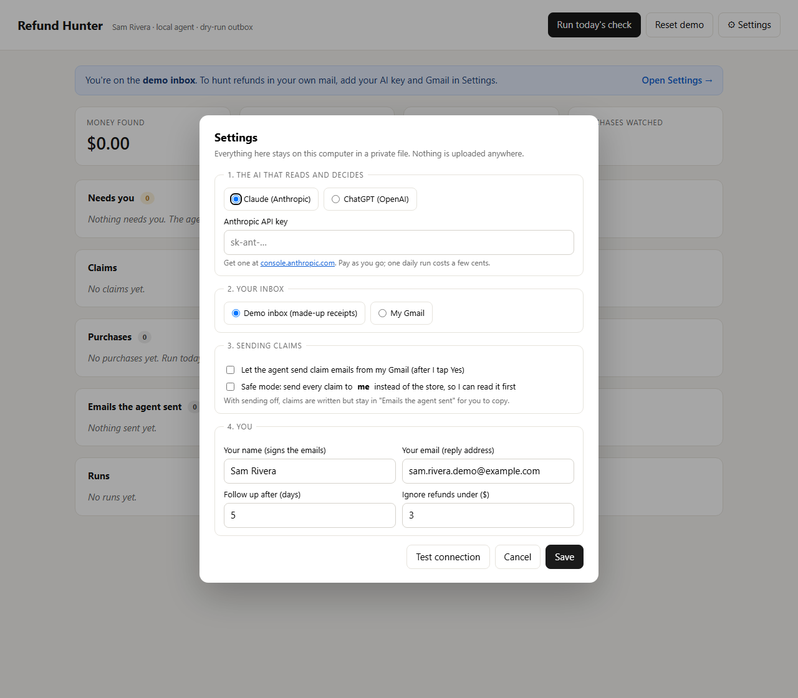
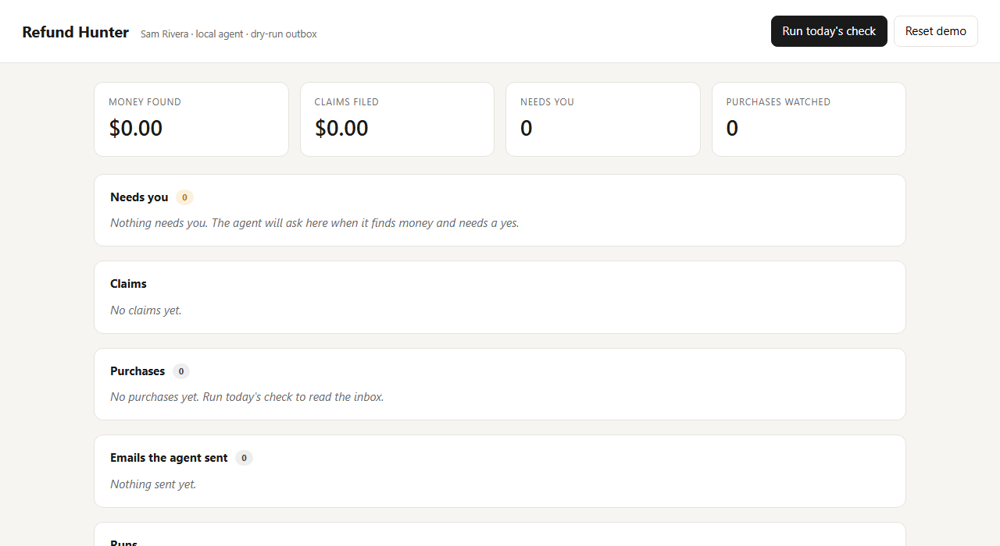
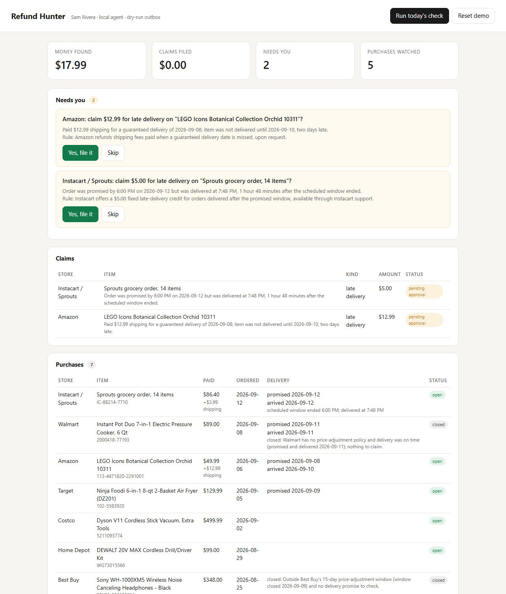
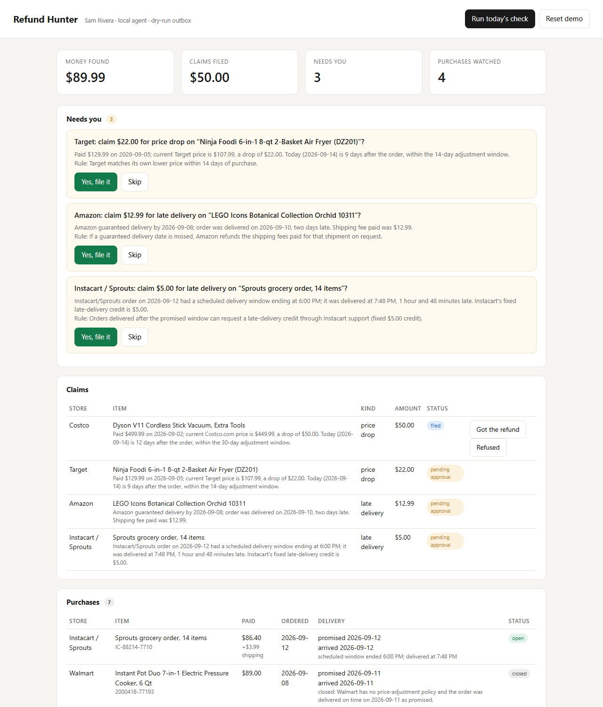
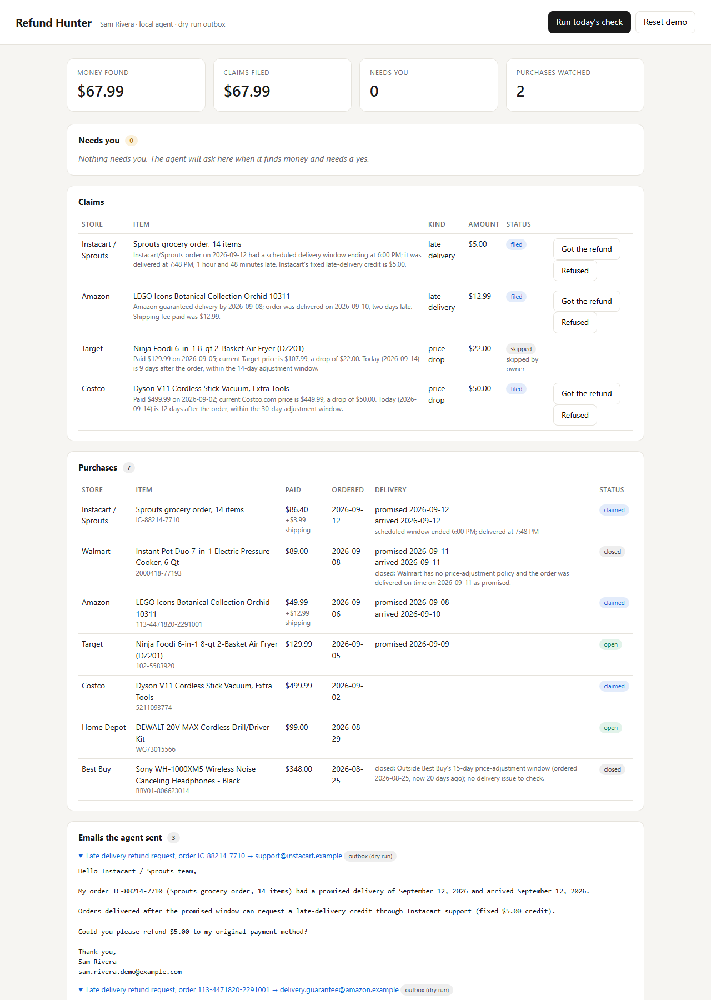
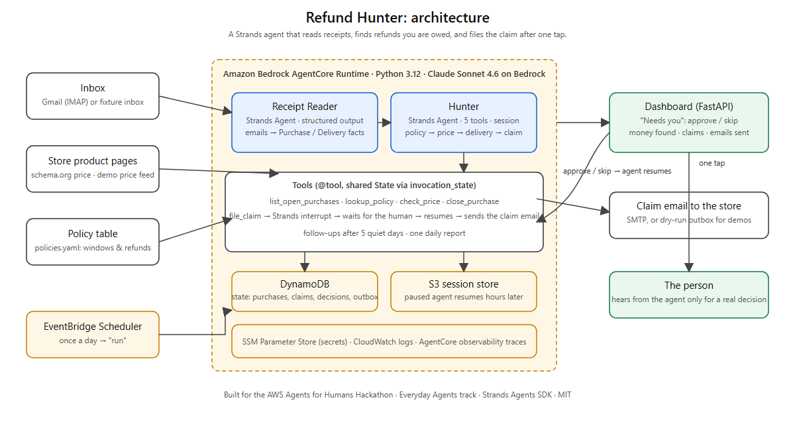

Refund Hunter: the demo guide
Everything you need to set it up, understand it, record the video, and submit. Step by step, with the screens you will see.
1. How it works, in one minute
Refund Hunter is an agent that reads your order emails, finds the refunds stores owe you (price drops inside a price-adjustment window, late deliveries), and files the claim after you tap Yes. If it finds nothing, you never hear from it.
Inboxorder & delivery emails
→
Receipt Readeremails → purchase list
→
Hunterrules · today's price · dates
→
Pause"File $22?" Yes / Skip
→
Claim emailto the store
- Two agents, built with the Strands Agents SDK, run on Claude (Amazon Bedrock).
- The Hunter has five tools. One of them,
file_claim, stops the agent with a Strands interrupt and waits for your answer. Your answer resumes the exact same agent, even hours later, because the session is saved.
- It runs by itself once a day on Amazon Bedrock AgentCore, woken by an EventBridge schedule. Memory is in DynamoDB, paused sessions in S3.
- The demo inbox is fake. A made-up person, made-up orders. No SMTP is configured, so claim emails stay in the "Emails the agent sent" list instead of going to a real store.
2. Setup
Start the dashboard. Open a terminal in the project folder and run:
cd refund-hunter\backend
.venv\Scripts\refundhunter serve
Then open http://127.0.0.1:8000 in Chrome. Leave the terminal open while you record.
Fresh start: press Reset demo in the dashboard (top right) before recording. It wipes purchases, claims, and answers.
Connecting your own AI key and inbox (for real use, not needed for the video)
Click ⚙ Settings at the top right. The form asks for four things: the AI (a Claude/Anthropic key, or a ChatGPT/OpenAI key), your inbox (the demo inbox, or your Gmail with an App Password), whether the agent may send claim emails, and your name. Test connection checks the inbox login and the AI in one go. Everything is saved to a private file on this computer and never uploaded.

Useful commands, if you ever want them:
| Command | What it does |
|---|
refundhunter run | Same as the "Run today's check" button, in the terminal |
refundhunter decisions | Lists the questions waiting for you |
refundhunter reset | Wipes the demo state |
On a new computer (not needed today): install uv, then in backend/ run
uv venv .venv --python 3.12, uv pip install -e ".[dev]" "strands-agents[anthropic]", copy
.env.example to .env, and make sure AWS credentials with Bedrock access are configured.
3. The demo, screen by screen
Record your screen at 1280 px wide or more. Total target: 4 min 30 s. The gray time stamps are where you should be.
0:00 Slide or talking head: the problem
Say: "Stores owe you money more often than you think. Target refunds the difference if their price drops within 14 days of your order. Costco gives you 30 days. Amazon refunds the shipping you paid when it misses a guaranteed delivery date. Almost nobody collects it, because for $22 you'd have to notice, know the rule, find the order number, write the email, and chase the reply. So the money stays with the store."
0:40 Who it's for
Say: "Refund Hunter is for anyone who shops online. It reads your receipts, checks every store's rules and prices in the background, and asks you exactly one question when it finds money. If there's nothing to claim, you never hear from it. Built with the Strands Agents SDK, running on Amazon Bedrock AgentCore."
1:10 Screen 1: the empty dashboard
Do: show the dashboard after Reset. Point at the four tiles and the empty "Needs you" box.

Say: "This is Sam's dashboard. Nothing yet. Sam's inbox has a dozen emails from the last three weeks: orders from Target, Costco, Amazon, Best Buy, Walmart, Home Depot, an Instacart delivery, a newsletter, and a note from a friend."
Optional: show backend/fixtures/inbox.json for five seconds so people see the emails are made up.
1:30 Screen 2: press "Run today's check"
Do: press the black button. It takes 30 to 45 seconds. Keep talking while it works.
Say: "The first agent, the Receipt Reader, turns those emails into a list of purchases: what, where, how much, when it was promised. The second agent, the Hunter, looks up each store's policy, checks today's price, compares delivery dates, and decides."

Say: "Seven purchases. Best Buy is closed: 20 days old, outside the 15-day window. Walmart is closed: no price adjustment, delivered on time. And up here, the agent has four questions for me. It didn't send anything. Costco dropped my vacuum by $50, 12 days into a 30-day window. Target dropped the air fryer by $22. Amazon delivered two days after the guaranteed date, and I paid $12.99 for shipping. Instacart delivered an hour and 48 minutes after the window."
Sometimes the questions arrive in two waves: a couple right after the run, the rest after you answer the first one. That is normal, and it looks good on video: "it found more."
2:20 Screen 3: tap "Yes, file it"
Do: tap Yes, file it on the Costco question ($50). Wait about 5 seconds. Scroll down to "Emails the agent sent" and open the email.
Say: "This is the part that matters. Filing a claim is a Strands interrupt: the agent stopped in the middle of its job and waited for me. Now it resumes, writes the email with the order number, the dates, the rule it relies on, and the amount, and sends it."

3:00 Screen 4: skip one, approve the rest
Do: tap Skip on Target ($22). Tap Yes on Amazon ($12.99) and Instacart ($5). Point at the tiles at the top.
Say: "Maybe I don't want to bother Target for $22. Skip. Remembered, no email. Amazon, two days late on a guaranteed date: yes, shipping refunded. Instacart: yes. Money found, claims filed. Every email is here, and I can read it."

3:40 Background and follow-up
Say: "Every morning at eight, EventBridge wakes the agent on AgentCore. New receipts get read, prices get re-checked while purchases are still inside their windows, and any claim the store hasn't answered in five days gets one polite follow-up. I only see this page when there's a decision."
Do: show the AWS console for 10 seconds: Amazon Bedrock → AgentCore → Runtimes → RefundHunter_Hunter (status READY). If you have time, EventBridge Scheduler → refundhunter-daily.
4:00 Architecture
Do: show docs/architecture.png full screen.

Say: "Two Strands agents. The Reader uses structured output. The Hunter has five tools, and one of them raises the interrupt. State in DynamoDB, the paused agent in S3, Claude on Bedrock, EventBridge for the schedule. Everything in the demo is synthetic, and the same code reads a real Gmail inbox over IMAP."
4:30 Close
Say: "Refund Hunter: the agent that collects the small money you're owed, and only talks to you when it needs a yes. It's open source, MIT, on GitHub."
4. Recording tips
- Use a clean Chrome window: no bookmarks bar, no other tabs visible. Zoom 100%.
- Do one full dry run first, then Reset demo and record.
- If the run takes long, cut the wait in editing. Judges want under 5 minutes.
- Windows: Win + Alt + R records the screen (Xbox Game Bar), or use OBS.
- Upload to YouTube as Public. Title: "Refund Hunter - Agents for Humans Hackathon (Strands Agents + AgentCore)".
5. Submit on Devpost
- Go to https://agentsforhumans.devpost.com and start a submission.
- Project name Refund Hunter. Track Everyday Agents.
- Description: copy the text from
docs/devpost.md.
- Repo: https://github.com/fakemovement/refund-hunter (public, MIT shown in About).
- Video: your YouTube link.
- Images: upload
docs/architecture.png and docs/dashboard.png.
- AWS Builder ID email: yours.
- Pre-existing code: "Deployment scaffold (AgentCore CDK project) reused from an earlier project of mine; all agent code written during the submission period."
- Submit before 1 PM Pacific. The hard deadline is 5 PM.